Attachment
Attach/Detach an entity to another one.
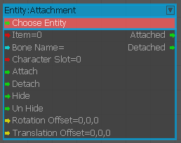
Inputs
| Port | Type | Description |
|---|---|---|
| Item | Any | Entity to be linked |
| BoneName | String | Attachment bone |
| CharacterSlot | Integer | Host character slot |
| Attach | Any | Attach entity attached to the bone |
| Detach | Any | Detach entity attached to bone |
| Hide | Any | Hide attachment |
| Unhide | Any | Show attachment |
| RotationOffset | Vec3 | Rotation offset |
| TranslationOffset | Vec3 | Translation offset |
Outputs
| Port | Type | Description |
|---|---|---|
| Attached | Any | Triggers when entity is attached |
| Detached | Any | Triggers when entity is detached |
AttachmentEx
This node lets you attach entities to other entities without requiring the declaration of the attachment joint in a .cdf file.
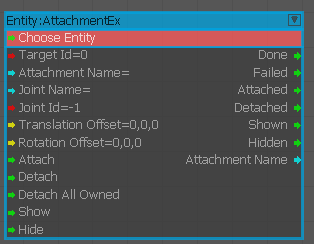
BeamEntity
Used to beam objects instantly to any position in the level. When the Beam port is triggered the target entity is moved to the position input on the Position port.
Additionally, rotation and scale can be set using the input ports to match the beamed entity to another entity.
Inputs
| Port | Type | Description |
|---|---|---|
| Beam | Any | Trigger to beam the entity |
| Position | Vec3 | Destination location to beam to |
| Rotation | Vec3 | Rotation to apply to entity |
| UseZeroRot | Boolean | Applies rotation even if it is 0 |
| Scale | Vec3 | Vector scale value |
| Memo | String | Memo to log when position is 0 |
Outputs
| Port | Type | Description |
|---|---|---|
| Done | Any | Triggers when entity has beamed to another location |
BroadcastEvent
Used to send an event to one or more entities. The entities that will receive this event are specified by inputting a string to the name port. Each entity that has the string which is input there as a part of their name will receive the event set in the event port.
The events are case sensitive, so make sure you type it in correctly.
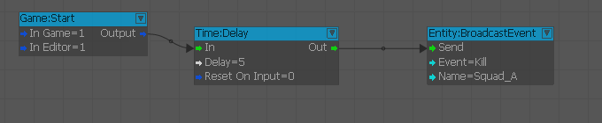
You can access the list of events associated with the entity if you right click on it and go to the events menu.
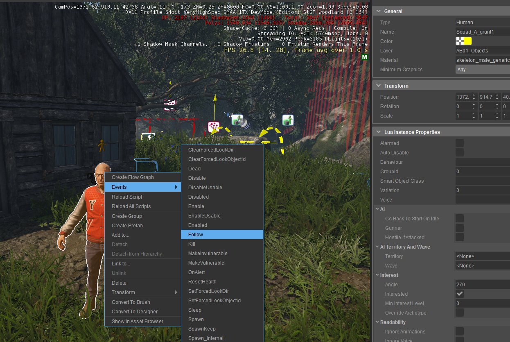
In this example after 5 seconds the Entity:BroadcastEvent node is used to send a Kill event to all entities which have the string 'Squad_A' in their name.
CallScriptFunction
Calls a scriptfunction onthe entity.
CharAttachmentMaterialParam
Allows changing a material on an attachment in a .cdf file. For example, you can change the material of the character's trousers.
Set Material is the trigger, ForcedMaterial is the full link to the material (eg: materials/references/basecolors/grey.mtl) and SubMtId is the number of the sub-material.
CharAttachmentControl
This node lets you easily switch a skin attachment and/or its current material and control its visibility.
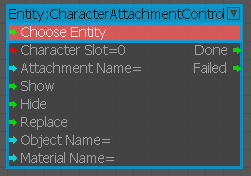
CheckDistance
Checkdistancebetween the node entity and the entities defined in the inputs.
CheckProjection
Check projection between the node's target entity forward direction (or the camera's view direction if not target entity selected) and the entities defined in the inputs.
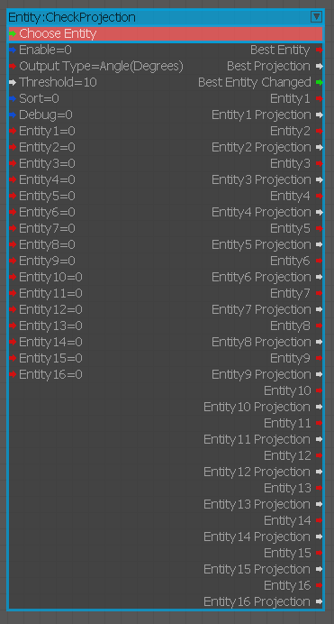
ChildAttach
Attaches another entity to its target entity. The child entity will be linked to the target entity until the link is removed. The entity defined in the Child input port is attached to the target entity.
ChildDetach
Used to detach entities from its parent entity. Usually the ChildAttach node has been used before to link the target entity to another entity.
The node has two additional ports to set transformation physics settings. When "KeepTransform" is set, the entity will keep its transformation in world space when detached. When "EnablePhysics" is set, physics will be re-enabled again when the entity is detached.
Damage
Damages specified entity by Damage amount when Trigger is activated.
EntitiesInRange
Takes the positions of two entities and checks if they are in a certain range to each other. Depending on the result of the check the output ports are triggered.
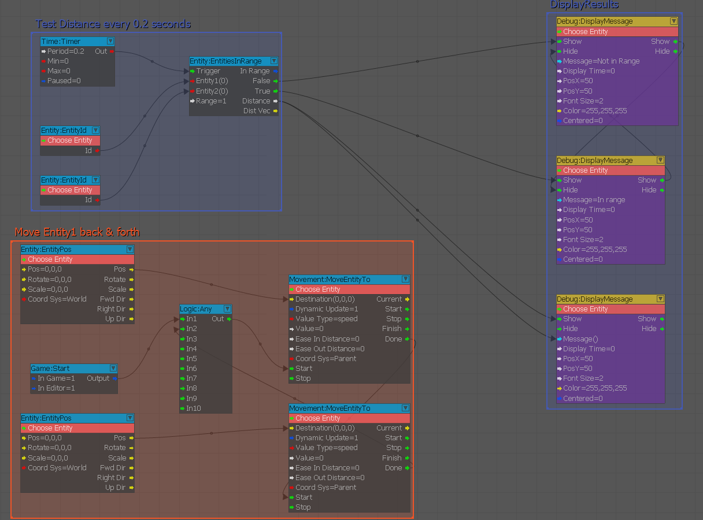
In the above example, we make entity1 move back and forth between two points. We have set up a timer to test the EntitiesInRange every 0.2 seconds.
When they are within range, display one message and when out of range, display another. We are also getting the distance check being sent to the HUD via another debug message off of the distance output.
EntityFaceAt
Forces an entity to look at the specified target entity.
EntityId
Outputs the entity ID number of the specified entity. The node does not need to be triggered because the entity ID never changes.
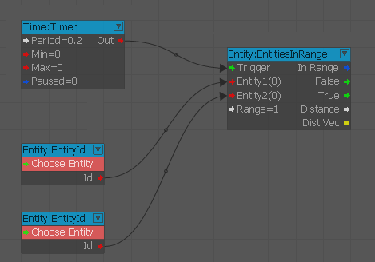
In the above example, the EntityIDs are used to define the targets of the inputs for the EntitiesInRange node.
EntityInfo
When triggered, this node outputs the ID, name, class, and archetype of the target entity. In cases where entity types need to be compared, this node is very useful.
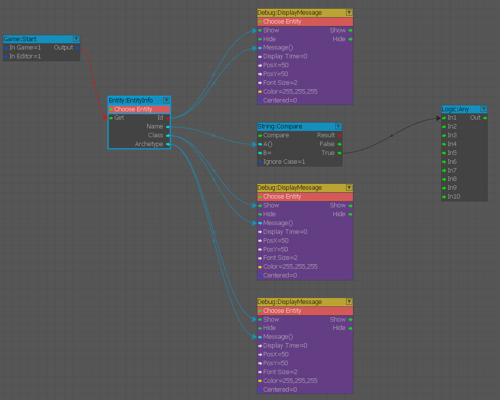
In this example, the name of the target entity of the EntityInfo node is compared to a string using a String:Compare.
EntityPos
Handles all position related manipulations of the owner entity. All position information of the specified entity can be read from the output ports.
Unlike the GetPos node, the output ports of this node are triggered whenever one of the target entities properties changes (i.e; when the object moves, dynamically updates).
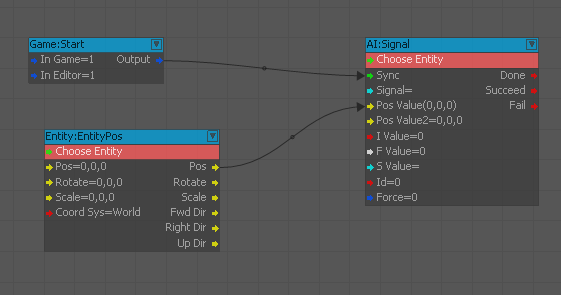
In this example, the position output port is used as a target for the entity Grunt1 to walk to with the AI:Signal node.
FlashInvoke
Invoke Flash Function.
GameVolumes
This allows using GameVolume nodes.
DistanceTest
This node lets you do basic tests with GameVolumes. Should be used for prototyping only.
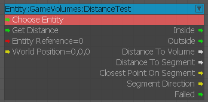
GetInfo
This node lets you do basic tests with GameVolumes. Should be used for prototyping only.
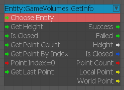
PositionTest
This node lets you do basic tests with GameVolumes. Should be used for prototyping only.
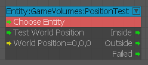
GetBounds
Used to get and output the bounds.
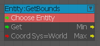
Inputs
| Port | Type | Description |
|---|---|---|
| Get | Any | Gets the AABB bounding box |
| CoordSys | Integer | Coordinate system used |
Outputs
| Port | Type | Description |
|---|---|---|
| Min | Vec3 | Minimum position of the AABB |
| Max | Vec3 | Maximum position of the AABB |
GetChildrenInfo
Gets information (count and IDs) of an entity's children.
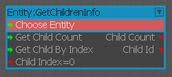
GetPos
The functionality of this node is similar to the EntityPos node but instead of triggering the output ports whenever any position information changes it only outputs when triggered to do so.
The only input port is the Get port, which when triggered outputs the according information on all output ports.
In situations where a constant update is too expensive the GetPos should be used instead of the EntityPos node which continuously outputs on all ports when any position value changes.
GlobalLayerListener
This node lets you listen to layer hiding/unhiding events.
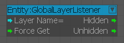
LayerSwitchListener
This node lets you listen to layer hiding/unhiding events for a given entity.
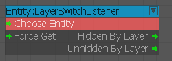
LinksGet
This node lets you inspect the configuration of entity links.
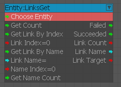
LinksSet
This node lets you inspect the configuration of entity links.
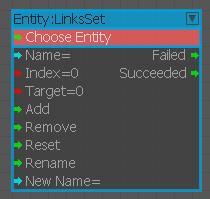
ParentId
Obtain the parentID number from the specified entity.
PropertyGet
Retrieve entity property value.
PropertySet
Change entity property value.
Note: This property change will not work with SaveLoad.
RenderParams
Set render specific parameters.
Spawn
Spawns an entity with the specified properties.
SpawnArchetype
Spawns an archetype entity with the specified properties.
TacticalScan
Gets the Id of the entity currently being tactical scanned.
TacticalScanComplete
Gets the Id of the entity that just completed (But before success or failure) being tactical scanned.
TacticalScanCurrentControl
Can control the tactical scan that is currently in progress.
TacticalScanStart
Gets the Id of the entity that just started being tactical scanned.
Velocity
Outputs different components of an entity's velocity.
Deprecated Nodes
- Entity:AttachChild
- Entity:DetachThis
- Entity:Material(moved to new Material folder)
- Entity:MaterialLayer(moved to new Material folder)
CheckArea
ElectricConnector
EntityScreenPos
TacticalScan
TacticalScanComplete
TacticalScanCurrentControl
TacticalScanStart
Velocity